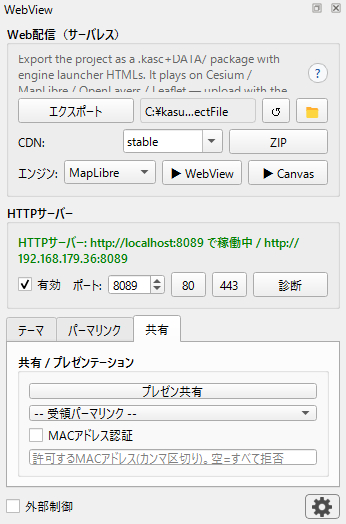
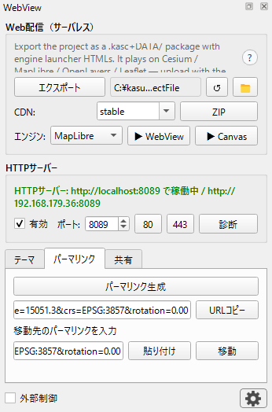
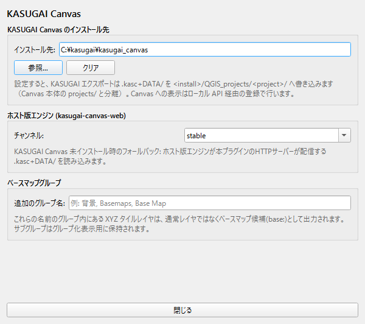

5. 技術資料
内蔵 HTTP サーバー（補助機能）
QGIS 内で動く軽量 HTTP サーバー。配信パッケージのライブ参照と 起動 API の受け皿です（v3.29.0 で OGC サービスは廃止）。
| エンドポイント | 内容 |
|---|---|
/kasugai |
.kasc+DATA/ エクスポート＋Canvas
登録・起動（?engine=・?install=1） |
/export-data/<rel> |
直近エクスポート物（.kasc/DATA/ 等）の配信 |
/<engine>/ |
インストール済み KASUGAI Canvas web/
の静的配信フォールバック |
/present |
プレゼン用ページ。OpenLayers ベースで QGIS キャンバスをウィンドウ共有（視聴者ごとの独立ズーム/パン/回転、キャンバス回転も再現） |
/present/state |
キャンバス状態 JSON（Canvas 側追従モード用） |
/screenshot |
現在のキャンバス表示の PNG（回転反映、w/h
でサイズ指定可。extent/screen/bbox/rot
でズーム範囲描画、X-Map-Extent/X-Map-Corners
応答ヘッダ付き） |
/received |
受領パーマリンク履歴 |

/present
のプレゼン共有・受領パーマリンク・MACアドレス認証パーマリンク・External Control（従来機能）
- 現在の地図ビュー（座標・スケール・回転・テーマ・レイヤ状態）を URL で共有
External Controlを ON にすると、外部から受信した URL で QGIS の表示を自動ナビゲート- Office ドキュメント（Excel / PowerPoint）への埋め込み、高解像度 PNG エクスポート

ネットワーク機能
- 外部アクセス診断: 接続性チェック、ファイアウォール検出
- 自動ポート設定: Windows ファイアウォールへの自動ルール追加
- 柔軟なポート設定: 80-65535 の全範囲対応
- 動的ホスト名解決: 外部デバイスからのアクセスに自動対応
エンドポイント一覧
| パス | 種別 | 内容 |
|---|---|---|
/kasugai |
JSON | KASUGAI Canvas へエクスポート・登録（?engine=
で起動エンジン、?install=1 で未インストール時の取得） |
/export-data/<rel> |
file | エクスポート産物（.kasc/DATA/）の配信 |
/<engine>/ |
HTML | インストール済み Canvas web/
の静的配信フォールバック |
/present |
HTML | プレゼン用ウィンドウ共有ページ（OpenLayers。視聴者ごとの独立ズーム/回転対応） |
/present/state |
JSON | キャンバス状態（追従モード用） |
/screenshot |
PNG | 現在のキャンバス画像（extent/screen/bbox/rot
でズーム範囲指定可） |
/received |
HTML | 受信パーマリンク履歴 |
/qgis-map |
permalink | パーマリンクのパス（ページは返さず受領記録・ナビゲートに使う） |
API 経由の呼び出し
同じ機能を API 経由でも呼べます:
GET /kasugai?engine=<e>— 外部アプリ・スクリプトからの一発起動（JSON 応答）- bridge
kasugaiExport(engine=...)— Live Driver 経由の AI 制御 - KASUGAI Canvas 側
qgis-importプラグインの「QGISから取り込み」ボタン — 逆方向からの呼び出し
geo_suite との連携
本プラグインは geo_suite プロジェクトの一部として開発されています。
- geo_webview: QGIS プロジェクトの Web 配信（本プラグイン）
- geo_suite: Re:Earth Visualizer 上で動くクライアントプラグイン（地図表示・編集）
- シナリオ: QGIS + geo_webview でデータ配信、geo_suite でモバイル/デスクトップから利用
両方を組み合わせることで、QGIS プロジェクトをそのままエンドユーザーに配布できるシステムを構築できます。
動作環境
- QGIS 4.x / 3.x（Qt5 / Qt6 両対応）
- Windows / macOS / Linux
- ネットワーク環境: LAN またはローカルホスト
- Python 3.7 以上
KASUGAI Canvas 連携（詳細）
/kasugai エンドポイント（またはファイル出力のみのパネル
Export ボタン、 ▶ Open ボタン、Live Driver
経由の kasugaiExport ブリッジ）で、 QGIS プロジェクトを
KASUGAI Canvas（Cesium / OpenLayers / MapLibre / Leaflet / GSI Maps
のマルチエンジン地図アプリ）へ送出します。
curl "http://localhost:8089/kasugai?engine=openlayers"
# → {"ok":true,"url":"http://localhost:8510/?project=...&engine=openlayers","dir":"...","layers":N,"tiles":M,"engine":"openlayers"}- 出力先: KASUGAI インストール先を設定で登録済みなら
<install>/QGIS_projects/<QGISプロジェクト名>/へ出力（Canvas 本体のprojects/と分離した QGIS 連携専用フォルダ）。未登録なら既定<ドキュメント>/kasugai_canvas_qgis（.kasc+DATA/）へ出力。いずれも起動中の Canvas には外部プロジェクトとして登録される - GPKG/GeoJSON/GeoParquet/FlatGeobuf はネイティブ参照、その他は GeoJSON(EPSG:4326) へ変換
- 各ベクターレイヤの QGIS スタイルを
.qmlとして同梱（KASUGAI 側が Cesium 描画へコンパイル。MapLibre/OpenLayers フロントでも QML をクライアント側コンパイルして適用） - WMS ラスタレイヤ（
type=xyz以外）はwms:行（layers=/styles=/format=オプション付き）として出力。wmts:行（RESTful テンプレート・KVP GetTile）も Canvas 側で読み込み可能 - 出力プロジェクトは
?engine=cesium|maplibre|openlayers|leaflet|gsimapsで全エンジンから開ける（3dtiles:行は Cesium/maplibre が 3D 表示、openlayers は deck.gl で真俯瞰の 2.5D 表示。leaflet/gsimaps では「未対応行」として明示） - 起動中の KASUGAI へ自動登録・表示切替（未起動時は
qgis-http/hostedフォールバックか出力のみ）
詳細は SPEC_JP.md の「KASUGAI Canvas 連携」節を参照。

開発・カスタマイズ
アーキテクチャ
geo_webview/
├── plugin.py # メインプラグイン
├── panel.py # UI パネル
├── panel_base.ui # パネルレイアウト(Qt Designer)
├── server_manager.py # HTTP サーバー管理・ルーティング（/kasugai・/export-data/・/present・/screenshot 等）
├── http_server.py # HTTP 応答の低水準送信ユーティリティ
├── kasugai_export.py # KASUGAI Canvas 連携（.kasc+DATA/ 生成・登録・起動）
├── scale_zoom.py # スケール/ズーム換算
├── settings_dialog.py # 設定ダイアログ
└── bridge.py # AI/外部制御用ブリッジ詳細仕様
技術仕様の詳細は SPEC.md / SPEC_JP.md を参照してください。
開発手順
SPEC.mdで仕様を確認- 主要ファイルを把握
- QGIS で動作確認
- 変更 → テスト → コミットのサイクル
翻訳対応
ソース言語は英語。i18n/<lang>.json に9言語 (de,
es, fr, hi, it, ja, pt, ru, zh)の翻訳カタログを持つ。 JSON
を直接編集する。未登録の文字列は英語にフォールバック。
# カタログ未登録の文字列を検出
python ../../scripts/i18n_tool.py checkセキュリティ注意事項
⚠️ 重要: 本プラグインは社内 LAN での利用を前提としています。
- 機密データを含む場合は外部公開を避けてください
- 外部公開が必要な場合は認証・アクセス制御を実装してください
External Controlを有効にすると外部 URL で QGIS 表示が書き換わるため、信頼できるネットワーク内でのみ使用してください- ファイアウォール設定を適切に行ってください
- 最小限のデータのみを公開してください